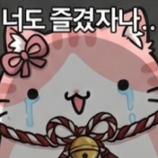

팩트) 근데 서양의학의 한계는 명확함 동양은 자연과 인체를 어우러지는 하나로보고 조화롭게 자연의 기를 받아들여 병을 없애는 방식인데 서양은 그냥 더 강한약으로 병균죽이는게 다임 그래서 저렇게 약먹고 주사맞고 할수록 몸은 점점 악화되는거 근본적인 원인을 찾아낼 생각을 안하고 지엽적으로 눈에보이는것만 찾아서 고치려고 드니까 저모양인거 서양의 과학만능주의때문에 현대인이 갈수록 병약해지는거임 옛날 우리조상들은 한겨울에도 천옷만입고 눈덮인 산에 올라가서 50키로씩 나무해왔음 지금 현대인들보다 훨씬 건강했던게 과거 우리조상들임
↳ 답글 · ㅇㅇ · 11.15 10:32:02
근데 왜 지금은 산에가서 50키로씩 나무 등짐지고 내려오라고 하면 안함??
↳ 답글 · ㅇㅇ · 11.15 10:33:09
ㅋㅋㅋ 과거 디시에 중국인들이 좀 서양 비슷한 상한론 대신 황제내경인가? 하여튼 갑자기 이상한 거 빨면서 퇴화되어서 처음엔 열대 지역 극복하고 똥남아인들 처바르다가 나중에 처발리고 그랬다는 글 올라오고 그랬는데 ㅋㅋㅋㅋ
히익, 기부금세액공제 님... 뜨거운 물 절반에 찬물 30% 붓는다는 그 음양탕 설명 읽는데 손이 떨렸어요... 아... 아아아!! 유전자가위 만들고 비만치료제 만드는 얘기 하다가 갑자기 컵에 물 붓는 그림이 나오니까 저는 뭐가 뭔지... 으으, 근데 저 바보라서 그런가 그 물컵 그림은 왠지 좀 정겹더라고요. 훌쩍...
↳ 답글 · ㅇㅇ · 11.15 10:34:24
ㅇㅇ · 11.15 10:33:47
음양탕이라고 속여서 물이라도 마시게 했으니 좋은 거 아니겠어?
나이들면 물 마시는 양 줄어든다
ㅇㅇ · 11.15 10:35:36
뭘 모르네
세계는 양자시뮬레이션 가상세계일 뿐임
그러다보니 숨겨진 몇몇 콘솔명령어로 치팅을 할수가 있는데
저런게 치팅 커맨드 중 하나인거임
수많은 경험을 통해서 찾아낸거지
음양탕 효과 증명됐고 전세계적으로 많이 연구되고 사람들이 실제로 구매하고 있는건데? 난 저거먹고 갑자기 눈이 뜨여서 고1때 전교 273등으로 입학했는데 고3모고때 11111 찍고 정시로 스카이 감 - dc App
ㅇㅇ · 11.15 11:01:28
걍 조선때 의학은 미신 그이상도 이하도 아니다 ㅋㅋㅋㅋㅋㅋㅋㅋㅋㅋㅋㅋㅋ
ㅇㅇ · 11.15 11:02:13
한국인은 한의학이 서양의학보다 잘맞음
ㅇㅇ · 11.15 11:02:33
센징들이 스테리스와 화가많은 이유=찬거만 쳐마셔서 주화입마됨.
NO벨과학상개센징 · 11.15 11:06:26
조센은 미국에 의해서 강제분단독립 쳐 당한다음에 안보를 의존하고 일본에게 식민지배로 근대화의 필요성을 몸으로 익힌다음 6.25민좆대잔치로 일본이 깔아놓은 인프라 다 날려처먹었어도 일본의 패전트라우마와 이로 인한 안보딜레마(냉전을 외면 할수는 없어서 요시다 독트린)로 인해 일센수교이후 일본의 돈퍼주기와 기술퍼주기 그리고 조센징이 기술을 훔쳐도 관대하게 봐줘서
↳ 답글 · NO벨과학상개센징 · 11.15 11:06:43
고도성장하다가 무능하고 탐욕스러운 김영삼이 선진국 만들었다는 치적만들려고 OECD에 가입할려고 인위적이고 무리하게 원고를 만들고 미국의 토사쿠팽과 양털깍기로 IMF 외환위기가 와서 대통령제 하는 다른 병신국가들(남미,아프리카,동남아 등)처럼 부도나고 밑천 다 드러나고 본 실력과 분수에 맞게 살뻔하다가 과거 북방외교라는 선견지명으로 중센수교와 중국 개혁개방
↳ 답글 · NO벨과학상개센징 · 11.15 11:07:36
초창기때 조선족들을 매개로 중국의 고도성장에 편승하고 중국에서 시작한 한류로 선진국 되고 러시아와 불곰사업으로 군사과학기술 이전 받아서 알량한 방위산업에 나름 자체적으로 무장하고 위성도 쐈고 21세기에는 중국에서 번돈으로 원천기술도 돈주고 사고(조센 고속철도 프랑스에게 사고 OLED원천기술 일본에 돈주고 삼)
↳ 답글 · NO벨과학상개센징 · 11.15 11:07:56
게다가 개센징이 자랑하는 조선업도 LNG 선은 프랑스 GTT사의 원천 기술을 로열티 주고 안쓰면 못만들고 건설업도 시공 노가다 빼고는 설계도 변변치 못하고 21세기가 무려 25년이 넘어도 노벨과학상이나 필즈상같은 주요 학술상 아직도 전혀 없고 유력후보조차 없는게 개센징임
↳ 답글 · ㅇㅇ · 11.15 11:11:49
오늘도 수고 하노 wwwwwww
ㅇㅇ · 11.15 11:08:28
팩트) 한의사 제도 말살하려다가 포기한건 느그 개정희 대령통이다
↳ 답글 · ㅇㅇ · 11.15 11:09:40
마찬가지로 50년대에도 양한방 갈등 심각했는데 한방사 말살하려다가 한방사들 로비+정치-공세에 결국 포기하고 존치결정한것도 느그 개승만이다
ㅇㅇ · 11.15 11:09:27
일본 잡신믿는 지역들 민간요법 들으면 치를떨겠노ㅋㅋㅋㅋㅋ
ㅇㅇ · 11.15 11:10:01
우리 민족혼을 말살코자 일제는 한반도에 음양탕을 보급시켰다..! - dc App
황족 · 11.15 11:25:34

ㅇㅇ · 11.15 11:32:13
음양탕 = 미지근한물이잖아 븅신들아
찬물대신마시면 원래부터 몸에 좋았어
ㅇㅇ · 11.15 11:33:24
저건 '미지근한 물' 이라는거다
대한민국인디언 · 11.15 11:47:19
미지근한 물 마시라는거잖아
ㅇㅇ · 11.15 12:00:23
원래 그런 나라임ㅇㅇ
ㅇㅇ · 11.15 12:00:52
어 이상하다 왜 세계 최초로 지하철 개발해놓고 조선보다 더럽고 쥐나오고 씹창인가요?(원종단 대답)
ㅇㅇ · 11.15 12:04:41
중국처럼 박쥐탕이 없었으니까 음양탕이라도 마셔야지
ㅇㅇ · 11.15 12:07:19
그냥 받아들이면 편하다 똥양인은 받아들여야 한다
ㅇㅇ · 11.15 12:11:38
깔게없어서 음양탕을 까네ㅋㅋㅋㅋㅋㅋㅋㅋㅋㅋㅋ 한국 국기부터 음양을 나타낸거다
↳ 답글 · ㅇㅇ · 11.15 12:11:55
대한민국은 본래 전세계를 호령하던 나라다
↳ 답글 · ㅇㅇ · 11.15 12:19:00
ㅇㅇ · 11.15 12:20:26
시발
↳ 답글 · ㅇㅇ · 11.15 12:20:40
병신 민족
ㅇㅇ · 11.15 12:21:16
미지근한물 << 이거 진짜 중요함
잇몸+인후+식도+위ph 전부 영향 받음
난 미지근한물 반년째 마시는데 진짜 소화 배변 피부 많이 좋아짐
ㅇㅇ · 11.15 12:28:22
음양탕은 대류에너지가 몸속 신진대사를 높인다는 주장은 과학적 근거가 부족한 유사과학으로 분류된다 진짜 효과는 수분을 공급하고 위장관을 부드럽게 깨우며 배변활동이나 소화촉진에 도움을 주는 일반적인 물 섭취 효과에 기인한다 걍 의학도 아니고 실온에 둔 물 적당히 섭취하면 된다는건 상식이잖아 시발
ㅇㅇ · 11.15 12:29:34
음양탕이 뭔데 원종아 존나 뜬금없노
↳ 답글 · ㅇㅇ · 11.15 12:57:12
아가리 국뽕 충락이 왔노 ㅋㅋ
ㅇㅇ · 11.15 12:44:20
빡대가리 틀딱들 그냥 물마시면 좋다고 하면 못알아들어 처먹어서 억지로 이름 갖다 붙여서 명약이다 하고 먹이는 거임 억까 ㄴㄴ
ㅇㅇ · 11.15 12:48:41
뭔 억지비교를 쳐하고 낄낄거리네 원종이병신들 ㅋ
↳ 답글 · ㅇㅇ · 11.15 12:56:55
국뽕 충락이 눈깔 뒤집혔노 ㅋㅋ
↳ 답글 · ㅇㅇ · 11.15 13:05:34
@ㅇㅇ(211.197) 뜬금없이 음양탕같은 해괴한거 들고와서 마운자로와 비교하는 원종이 수준 ㅋ
우리 의학계에 세계 최고 수준인 분야가 있는데 비교 대상으로 가져오는게 음양탕인 꼬라지가 웃기노. ㄴㄱㅁ가 임신할 때 뭘 처먹었는지 알만하다
↳ 답글 · ㅇㅇ · 11.15 13:46:09
우리 의학계에 세계 최고 수준인 분야(서양 학을 쓰며)
ㅇㅇ · 11.15 13:42:37
교육내용 폭로하고 양심선언하는 자퇴자가 있는 유일한 학과
元좆본 · 11.15 14:02:30
K무당 ㅋ
ㅇㅇ · 11.15 14:04:37
돈 안들어서 그건 좋네
ㅇㅇ · 11.15 14:06:56
근데, 음양탕이고 뭐고 미개한건 맞는데, 미지근한 물이 건강에 제일 좋긴해. 우리 체온과 비슷한 30도대의 음식물을 섭취하거나 이 정도 온도의 물로 샤워하는게 건강에 최고 좋음. 뜨거운 것 먹으며 어후 시원하다 라는 건 역류성 식도염과 식도암의 원인. 과거에 우리나라 어르신들이 매우 뜨거운 것 섭취하며 즐거워하는 경우 많았지. 어쩌면 이럴 때는 미지근한 물이 약이 될 수도 있겠다 ㅋㅋㅋ
ㅇㅇ · 11.15 14:22:42
그저 조센징...
ㅇㅇ · 11.15 14:26:30
음양탕
ㅇㅇ · 11.15 14:41:29
ㅇㅇ · 11.15 14:54:23
엔사^cafe ^삼. 카카^오 c^af^eb^uy ^빼 고 문의
ㅇㅇ · 11.15 15:14:41
아무래도 이건 너무 억지가 아닌가 우리나라 음양탕 이 ㅈㄹ 떠는거 나이 많은 사람들 중에서도 국뽕에 심취한 그런 인간들 뿐인데ㅋㅋㅋㅋㅋㅋㅋ해외에도 저런 개소리 민간요법 많음. 당장 일본만 봐도 똥꼬에 파 꽂는다든가...

댓글
수집 당시 댓글 161개
· ㅇㅇ · 11.15 14:31:46
· ㅇㅇ · 11.15 14:52:43
· ㅇㅇ · 11.15 14:53:59
· ㅇㅇ · 11.15 14:54:26
· ㅇㅇ · 11.15 15:02:33
· ㅇㅇ · 11.15 15:03:20
· ㅇㅇ · 11.15 15:04:13
· ㅇㅇ · 11.15 16:00:49
ㅇㅇ · 11.15 10:29:12
· ㅇㅇ · 11.15 15:02:53
ㅇㅇ · 11.15 10:29:37
· ㅇㅇ · 11.15 10:32:02
· ㅇㅇ · 11.15 10:33:09
· 수박 · 11.15 11:41:44
· Honsound · 11.15 15:04:59
토라만 · 11.15 10:31:59
ㅇㅇ · 11.15 10:32:50
봇치쟝 · 11.15 10:33:41
· ㅇㅇ · 11.15 10:34:24
ㅇㅇ · 11.15 10:33:47
ㅇㅇ · 11.15 10:35:36
· ㅇㅇ · 11.15 10:50:56
· ㄴㄴ · 11.15 16:07:22
FT-FWMC · 11.15 10:36:39
ㅇㅇ · 11.15 10:37:47
뭔가
음탕해
ㅇㅇ · 11.15 10:38:02
ㅇㅇ · 11.15 10:39:25
ㅇㅇ · 11.15 10:39:37
ㅇㅇ · 11.15 10:39:48
ㅇㅇ · 11.15 10:40:26
ㅇㅇ · 11.15 10:40:38
ㅇㅇ · 11.15 10:40:54
ㅇㅇ · 11.15 10:41:18
ㅇㅇ · 11.15 10:41:46
ㅇㅇ · 11.15 10:41:53
술담배여자도박 · 11.15 10:42:51
ㅇㅇ · 11.15 10:43:25
· ㅇㅇ · 11.15 10:48:05
ㅇㅇ · 11.15 10:47:43
ㅇㅇ · 11.15 10:48:24
조~센
ㅇㅇ · 11.15 10:49:07
· ㅇㅇ · 11.15 11:08:21
ㅇㅇ · 11.15 10:51:15
실베현자 · 11.15 10:52:16
· 실베현자 · 11.15 10:52:23
· 실베현자 · 11.15 10:52:39
ㅇㅇ · 11.15 10:55:11
ㅇㅇ · 11.15 10:55:16
ㅇㅅ · 11.15 10:56:02
ㅇㅇ · 11.15 10:56:30
도태남 · 11.15 11:00:12
ㅇㅇ · 11.15 11:01:28
ㅇㅇ · 11.15 11:02:13
ㅇㅇ · 11.15 11:02:33
NO벨과학상개센징 · 11.15 11:06:26
· NO벨과학상개센징 · 11.15 11:06:43
· NO벨과학상개센징 · 11.15 11:07:36
· NO벨과학상개센징 · 11.15 11:07:56
· ㅇㅇ · 11.15 11:11:49
ㅇㅇ · 11.15 11:08:28
· ㅇㅇ · 11.15 11:09:40
ㅇㅇ · 11.15 11:09:27
ㅇㅇ · 11.15 11:10:01
황족 · 11.15 11:25:34

ㅇㅇ · 11.15 11:32:13
ㅇㅇ · 11.15 11:33:24
대한민국인디언 · 11.15 11:47:19
ㅇㅇ · 11.15 12:00:23
ㅇㅇ · 11.15 12:00:52
ㅇㅇ · 11.15 12:04:41
ㅇㅇ · 11.15 12:07:19
ㅇㅇ · 11.15 12:11:38
· ㅇㅇ · 11.15 12:11:55
· ㅇㅇ · 11.15 12:19:00
ㅇㅇ · 11.15 12:20:26
시발
· ㅇㅇ · 11.15 12:20:40
병신
민족
ㅇㅇ · 11.15 12:21:16
ㅇㅇ · 11.15 12:28:22
ㅇㅇ · 11.15 12:29:34
· ㅇㅇ · 11.15 12:57:12
ㅇㅇ · 11.15 12:44:20
ㅇㅇ · 11.15 12:48:41
· ㅇㅇ · 11.15 12:56:55
· ㅇㅇ · 11.15 13:05:34
· ㅇㅇ · 11.15 13:46:35
ㅇㅇ · 11.15 12:56:34
· ㅇㅇ · 11.15 13:46:18
· ㅇㅇ · 11.15 14:04:59
· ㅇㅇ · 11.15 14:57:24
ㅇㅇ · 11.15 13:28:48
· ㅇㅇ · 11.15 13:46:09
ㅇㅇ · 11.15 13:42:37
元좆본 · 11.15 14:02:30
ㅇㅇ · 11.15 14:04:37
ㅇㅇ · 11.15 14:06:56
ㅇㅇ · 11.15 14:22:42
ㅇㅇ · 11.15 14:26:30
ㅇㅇ · 11.15 14:41:29
ㅇㅇ · 11.15 14:54:23
ㅇㅇ · 11.15 15:14:41
ㅇㅇ · 11.14 23:21:40
ㅇㅇ · 11.14 23:21:59
· ㅇㅇ · 11.14 23:23:14
ㅇㅇ · 11.14 23:23:42
ㅇㅇ · 11.14 23:25:46
· 기부금세액공제 · 11.14 23:27:14
· 미야빙 · 11.14 23:39:46
· 하나달 · 11.14 23:44:39
· 가자미 · 11.14 23:49:57
· ㅁㅁ · 11.14 23:50:15
· ㅇㅇ · 11.15 00:03:23
· ㅇㅇ · 11.15 00:35:03
· 꾜닐라즈 · 11.15 00:47:02
· 극복의경지 · 11.15 09:13:45
· 스틸콜드 · 11.15 10:03:04
· ㅇㅇ · 11.15 11:04:36
· ㅇㅇ · 11.15 13:21:24
· ㅇㅇ · 11.15 15:34:32
ㅇㅇ · 11.14 23:27:49
유명 · 11.14 23:27:54
삭제됨 · 11.14 23:29:44
· 코드치기귀찮아서만든계정 · 11.14 23:38:44
· ㅇㅇ · 11.14 23:56:11
토해짬파 · 11.14 23:30:01
sakuri · 11.14 23:37:48
· 미야빙 · 11.14 23:40:02
· ㅇㅇ · 11.15 00:04:40
· ㅇㅇ · 11.15 00:21:16
· 시립 · 11.15 00:31:36
· ㅇㅇ · 11.15 05:44:07
· ㅇㅇ · 11.15 10:39:24
ㅇㅇ · 11.14 23:37:52
ㅇㅇ · 11.14 23:38:59
트리니티호감고닉미카 · 11.14 23:39:33
아비아나 · 11.14 23:42:49
ㅇㅇ · 11.14 23:43:09
Припять · 11.14 23:44:31
ㅇㅇ · 11.14 23:47:29
ㅇㅇ · 11.14 23:48:00
뒤뒤 · 11.14 23:50:35
밋아 · 11.14 23:50:45
ㅇㅇ · 11.14 23:57:16
ㅇㅇ · 11.15 00:17:24
린잘알 · 11.15 00:19:49
ㅇㅇ · 11.15 00:32:40
ㅇㅇ · 11.15 00:44:24
· ㅇㅇ · 11.15 01:38:13
· ㅇㅇ · 11.15 01:42:37
· 수박 · 11.15 11:42:19
ㅇㅇ · 11.15 01:03:56
ㅇㅇ · 11.15 01:58:27
ㅇㅇ · 11.15 02:08:07
ㅇㅇ · 11.15 04:18:27
Factor · 11.15 10:17:59
실베도로롱 · 11.15 10:28:05
· 실베도로롱 · 11.15 10:28:20
· ㅇㅇ · 11.15 10:33:43
ㅇㅇ · 11.15 10:28:37
ㅇㅇ · 11.15 10:28:37
· ㅇㅇ · 11.15 10:31:20
· ㅇㅇ · 11.15 10:32:18